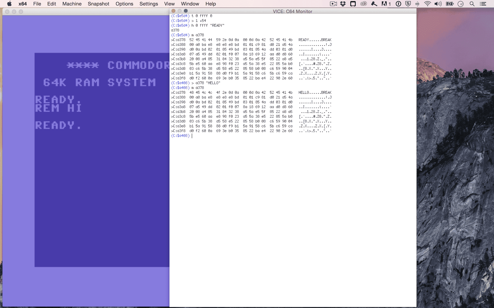

Episode #002 - BASIC's Basics
In which we'll learn how to execute BASIC commands. We will define and use variables, convert between different types and display them on the screen. Along the way we will find out why floats in BASIC are faster than integers. And finally, we'll discover obscure uses of the PRINT command.Watch the video
Download show notes
Click on the button below to get the full transcript, source code and programming exercises.
This way you follow along while watching the episode.
You will not only understand what is happening but also code everything yourself!
Download show notesBy the way. This episode is part of a Season 1. So you can get it in a bundle with 8 other episodes.
You can read more about that below
Season 1 - From Basic to Assembly

Here's what you get
- 9 videos (50+ minutes in total)
- transcripts (7500+ words)
- source code examples (450+ LOC)'
- access to 64bitesVIP Facebook group, where you can get help
- online streaming
- download with no DRM
- one time payment (no monthly/annual fees)
You WILL learn following in BASIC
- How to operate your Commodore 64 using commands in immediate mode.
- Meaning of potential errors that you can encounter in BASIC.
- Write programs in BASIC that can be executed later.
- Read and modify memory the PEEK and POKE commands to.
- Using FOR loops to simplify repetitive tasks
- Draw simple images with READ and DATA.
In Assembly You WILL:
- Understand how the program in assembly is stored and executed.
- Insert byte code into the memory by hand (and yes, it will work!).
- Learn how to use the KickAssembler - modern 6502 assembly compiler.
- Understand the difference between lda #$01 and lda $01
- Use JMP, JSR and RTS to structure your program
All Episodes in this Season

Episode #009 - Jumping Around
Where we will learn how to use JMP, JSR and RTS commands to jump around programs. We will also use labels, constants and subroutines to make the programs a bit more readable.
Episode #008 - Assembly - The Sane Way
In this episode we will learn an easier way to write the assembly. Instead of using machine language monitor like animals, we can use modern development environments that work on every platform. With a text editor, a cross-assembler and an emulator we can compile and run our programs with a single button press.
Episode #007 - Assembly - The Hard Way
In this episode we will start our adventure with the assembly. We will learn a handful of commands, how to translate them into machine code by hand [sic!], and how to run them from BASIC. We will also learn to use the Monitor program to view and modify our program in a slightly more convenient way.
Episode #006 - Read Data
The DATA statement is used to define sequences of string or numerical constants. The READ command is used in to pick values from these sequences of one by one. They are mostly used in combination with FOR loops and the POKE command in programs. In this episode you'll learn how to use them.
Episode #005 - For Loops
Where we learn how to simplify repetitive tasks using FOR loops in BASIC. We will find out how to properly nest them to perform tasks on multidimensional data. And finally how can we use them to fill the computer screen with love;)
Episode #004 - PEEK & POKE
We will learn how to use two most powerful instructions in BASIC - Peek and Poke. We can use them to read from and write to the memory, which on C64 is not only used to store data. By writing values into specific addresses we can display graphics, play sound, modify the behaviour of the operating system or even crash the computer if we're not careful.
Episode #003 - Programs in BASIC
We will learn how to write LIST and RUN programs in basic. We'll see how to debug them using STOP and CONT commands. We will also find out the surprising similarities and differences between the RUN and GOTO.
Episode #002 - BASIC's Basics
In which we'll learn how to execute BASIC commands. We will define and use variables, convert between different types and display them on the screen. Along the way we will find out why floats in BASIC are faster than integers. And finally, we'll discover obscure uses of the PRINT command. 